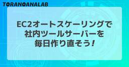

虎の穴ラボ技術ブログ
https://toranoana-lab.hatenablog.com/
虎の穴ラボ株式会社所属のエンジニアが書く技術ブログです
フィード

EC2オートスケーリングで社内ツールサーバーを毎日作り直そう！
虎の穴ラボ技術ブログ
はじめに こんにちは！虎の穴ラボの鷺山です。 業務の効率化のために社内用ツールサーバーを作って活用することは、よく行われる取り組みだと思います。 弊社も同様にツールサーバーで既製ツールや自製ツールのホスティングを行い、さまざまなタスクを効率化しています。 ただ、このようなツールサーバーは手動でセットアップされることが多いと思います。 SSHで接続し、コマンドを実行して構築するような方法です。 また、ツールサーバーは（顧客向けの本番サーバーと比べて）優先度が低く、バックアップの対応が後回しになりがちです。 その結果、何らかのトラブルでツールサーバーが使えなくなると手動で一から環境を再構築し直すこ…
5日前

1月Fantia採用イベントをご紹介します！
虎の穴ラボ技術ブログ
こんにちは、虎の穴ラボ 採用担当 白石です。 今回は1月に予定されている採用イベントについて紹介させてください！ ①1/16(木)19:00~ オンライン開催💻 Fantiaオンライン採用説明会&相談会 対象ポジションは「エンジニア／Web開発ディレクター／運用・カスタマーサポート」の3職種です。 複数職種の仕事内容を聞くことで、サービス運営や仕事で関わるメンバーについても理解を深めることができます😊 オンラインのため、お気軽にご参加いただけます！ yumenosora.connpass.com ②1/24(金)19:30~ 現地開催🏢 Fantiaエンジニア採用説明会 対象ポジションは「エン…
17日前
Difyテンプレートで学ぶLLMアプリの作り方
虎の穴ラボ技術ブログ
この記事は虎の穴ラボ Advent Calendar 2024の25日目の記事です。 こんにちは。虎の穴ラボのT.Hです。 全くの偶然なのですが、昨日のiwadyさんと同じくDifyについての記事を投稿させていただきます！ はじめに テンプレートの導入 アプリの動き アップロードと言語選択 論文の読み込み 質問（１） 質問（２） テンプレートを読む 全体像 会話変数 環境変数 機能 初期処理 CASE1 : 初期設定 CASE1：論文の要約 CASE1：論文の分析 CASE1：論文の評価 CASE1：評価の出力 CASE1：後処理 CASE2：回答の準備 CASE2：質問への回答 CASE2：…
19日前
Dify は本当にノーコードで AI アプリを作れるのか試してみた！
虎の穴ラボ技術ブログ
Dify は本当にノーコードで AI アプリを作れるのか試してみた！ この記事は虎の穴ラボ Advent Calendar 2024の24日目の記事です。 明日で2024年アドベントカレンダーも最後ですね。 今年のアドベントカレンダーのラストを飾るのはT.Hさんです。 ご期待ください！ 本記事のテーマは「Dify は本当にノーコードで AI アプリを作れるのか試してみた！」です！ 1. 導入 こんにちは。 虎の穴ラボ株式会社のiwadyです。 開発者の皆さん、Pythonしてますか？ Python 3.13のリリースで界隈が盛り上がっていますね。3.13 では CPython の GIL を無…
20日前
マルチプラットフォームを目指すための「Haxe」という選択肢
虎の穴ラボ技術ブログ
皆さんこんにちは！虎の穴ラボのmisonoです。 この記事は虎の穴ラボ Advent Calendar 2024の23日目の記事です。 皆さんはアプリケーションを作成する時にどんな言語やプラットフォームを使いますか？ 人によって様々だと思いますが、目的のアプリケーションをPCでもスマホでも、あるいはゲーム機でも動作させたいなどと思う時があるかもしれません。 そんな時に選択肢として有力な「Haxe」。聞いたことのない人は多いと思います。 今回は、そのHaxeについて少し紹介してみたいと思います。 Haxeとは haxe.org Haxeは静的型付けのオブジェクト指向なプログラミング言語、そしてそ…
21日前
Java 24 新機能 Stream Gatherers とは
虎の穴ラボ技術ブログ
こんにちは。虎の穴ラボ エンジニアの S.A です。 本ブログ記事は、虎の穴ラボ Advent Calendar 2024 22日目の記事です✨ 今回は Java 24 で正式導入される予定の Stream Gatherers についてご紹介します。 Stream Gatherers (ギャザラー)とは Stream API における中間処理をより便利にするための新機能です。 Java 22 でプレビュー版として導入され、Java 23 でのセカンドプレビューを経て、 2025年3月にリリース予定の Java 24 で正式に導入される予定です。 JEP 461: Stream Gatherer…
22日前
パスワードマネージャーVaultwardenのサーバをオンプレに構築して使ってみた
虎の穴ラボ技術ブログ
パスワードマネージャーVaultwardenのサーバをオンプレに構築して使ってみた こんにちは。虎の穴ラボのサカガミです。 この記事は 虎の穴ラボ Advent Calendar 2024 21日目の記事です。 qiita.com 今回は「パスワードマネージャーVaultwardenのサーバをオンプレに構築して使ってみた」 というテーマで書かせていただきます。 目的 一般的に、パスワードの利用には以下のようなリスクがあると言われています。 短くて単純なパスワードの設定 パスワードの使いまわし 管理の難しさ 理想的には、Passkey などのパスワードレス認証へ移行することが望ましいですが、 利…
23日前
サブカル業界Developers勉強会 vol.8を開催しました！
虎の穴ラボ技術ブログ
こんにちは、虎の穴ラボ 採用担当白石です！ 2024/12/13(金) 19:00~開催された「サブカル業界Developers 勉強会Vol.8」のレポートを書いていきたいと思います。 今回のテーマは『教えて！サブカル系サービスの仕様が決まるまでのストーリー』ということで、各社の「顧客のニーズ/要望 に“こたえる”かどうかの線引き、価値観のポイント」、「仕様決定後にどのようなメンバーが関わっているのか」を含め、仕様決定から業務フローまでサービスの裏側をお話しました。 今回の現地開催はピクシブさんのオフィスが会場！セッションはオンラインでも配信され、現地では懇親会も実施されました✨ ▼イベント…
23日前
Tailwind CSS と Atomic Design で実現する効率的な Web 開発の事例
虎の穴ラボ技術ブログ
この記事は虎の穴ラボ Advent Calendar 2024の 20 日目の記事です。 こんにちは、虎の穴ラボの古賀です。 今回の記事は React や Vue などモダンな環境に対する Tailwind CSS や Atomic Design の導入の知見が得られる内容となっていますので、よろしければご覧ください。 目次 はじめに 採用理由 Tailwind CSS Atomic Design 開発ガイドライン コンポーネント単位の外部 CSS は作らない global.css には基本何も書かない カスタムコンポーネントに className 属性を使わない 任意の値は制限しない tai…
24日前
定期的なスケジュール調整をGAS + Discord連携で楽にしてみた
虎の穴ラボ技術ブログ
こんにちは！虎の穴ラボのH.Nです。 この記事は虎の穴ラボ 虎の穴ラボ Advent Calendar 2024の19日目の記事です。 突然ですが皆さんはプログラミング以外に何か趣味はお持ちですか？ 私はFF14というオンラインゲームにハマっており、最近は高難易度コンテンツに挑戦するための固定リーダーを担当しております。 その中で固定メンバー8人の毎週の予定管理やそれに伴う活動管理を行うにあたって、これまでは日程調整用の外部サービスを利用していたのですが、 毎週新規のイベントページを作成しないといけない 予定入力状況を人力で確認しないといけない という課題がありました。 そこで今回、予定管理を…
25日前
SpringAIを使用してOpenAIのFunctionCallingを使ってみた
虎の穴ラボ技術ブログ
この記事は虎の穴ラボ Advent Calendar 2024の18日目の記事です。 こんにちは、虎の穴ラボのH.Hです。 今日は最近使っているSpringAIというライブラリの中で対応しているFunctionCallingの実装と実際の結果についてまとめました。 FunctionCallingとは何か OpenAIのAPIのリファレンスでは以下の説明されています。 抜粋 Function calling enables developers to connect language models to external data and systems. You can define a se…
1ヶ月前
Bolt.newとは？AIで簡単に作るWebアプリ
虎の穴ラボ技術ブログ
この記事は虎の穴ラボ Advent Calendar 2024の17日目の記事です。 こんにちは、虎の穴ラボのHoshiと申します。 今回は最近話題の生成AIでWebアプリをプロンプトの指示だけで作成ができるBolt.newをご紹介したいと思います！ 目次 目次 Bolt.newの特徴 ── AIでWebアプリをプロンプト指示だけで生成 実際に動かしてみた 1. Bolt.newにログイン 2. 実際に作成したいWebアプリのプロンプトを入力 3. アプリの実行 ちょっと詳しく紹介 仕組み 料金について OSSについて 最後に 採用情報 Bolt.newの特徴 ── AIでWebアプリをプロン…
1ヶ月前
虎の穴ラボのエンジニアリングマネジメントの役割と歴史
虎の穴ラボ技術ブログ
こんにちは。虎の穴ラボでエンジニアリングマネージャーをしているH.Kです。 本ブログ記事は、虎の穴ラボ Advent Calendar 2024 16日目の記事です。 qiita.com この記事では虎の穴ラボのエンジニアリングマネージャーの役割を、組織の歴史と文化を踏まえて解説します。 組織作りやエンジニアリングマネージャーの仕事の進め方の参考になれば幸いです。
1ヶ月前
きれいな設計を目指したい！ ちょうぜつ ソフトウェア設計入門
虎の穴ラボ技術ブログ
本記事は 虎の穴ラボ Advent Calendar 2024 15日目の予約投稿記事です。 こんにちは、虎の穴ラボの大場です。 今回は「ちょうぜつソフトウェア設計入門 PHPで理解するオブジェクト指向の活用」という書籍について紹介します。 本書の目次を眺めた時にソフトウェア設計の話題に加えて、依存性の注入(DI)に関して取り扱っていた点に惹かれて購入しました。 まだDIの章まで読み進められていないのですが良い本だと感じているので、私が読み進められている範囲で本書を紹介していければと思います。 書籍情報 どんな本か 対象読者について 書籍の構成について 書籍全体の雰囲気 書籍内容 1章 クリー…
1ヶ月前
connect-goで生成しながら始めるAPI開発入門
虎の穴ラボ技術ブログ
この記事は虎の穴ラボ Advent Calendar 2024の14日目の記事です。 こんにちは、虎の穴ラボFantiaエンジニアのNSYです。 今回はconnect-goによるAPIの開発に入門してみました。 connectとは、gRPC(Google Remote Procedure Call)の構築をシンプルに行うことができるGo言語のライブラリです。 これを利用することでサーバーとクライアントを効率的に開発することができます。この記事では加えてGo言語のコード生成ができるライブラリを組み合わせ、TodoのCRUDを行うAPIを構築してみました。 connectrpc.com 目次 目次…
1ヶ月前
具体と抽象のピラミッド構造を学ぶ
虎の穴ラボ技術ブログ
この記事は虎の穴ラボ Advent Calendar 2024の13日目の記事です。 こんにちは、虎の穴ラボエンジニアの原です。 今回は、「具体と抽象」という本を読んだので、書評を書こうと思います。 イラストも多く、とても「わかりやすく」具体と抽象がわかったので、お勧めしようと思います！ この記事の目的 誰に 「具体的に言って？」や「抽象的にまとめると？」と言われて困ったことがある人 なんと言って欲しいか 「抽象的」と「具体的」の関係と構造が理解できた！ 本の概要 この本は、全20章を通して「具体と抽象とはなんなのか？」から「具体と抽象をどう使って学ぶのか？」、最後に「抽象を使う時の注意点」と…
1ヶ月前
インフラ視点で情報処理安全確保支援士過去問やってみた
虎の穴ラボ技術ブログ
こんにちは、虎の穴ラボの小西です。 この記事は虎の穴ラボ Advent Calendar 2024の12日目の記事です。 所属はインフラ担当になります。 昨今のニュースなどで皆さんも気にかけていることは多いと思いますが 今回はセキュリティに関することを取り上げようと思います。 テーマはセキュリティ試験を解くことで何か見えてこないか？ テーマにそって記事の内容を考えたのですが IPA 独立行政法人情報処理推進機構 にて実施している情報処理安全確保支援士の令和4年午後問題を題材にしてみました。 記事にする題材を決めるにあたり 語句の意味を覚えていればいいといった記憶力勝負の問題ではないこと 実際の…
1ヶ月前
Lambdaの上位存在(!?) AWS Step Functionsを使ってみよう！
虎の穴ラボ技術ブログ
この記事は虎の穴ラボ Advent Calendar 2024の11日目の記事です。 はじめに こんにちは！虎の穴ラボの鷺山です。 私はこれまで「AWSでのシステム連携といえばLambda。Lambdaでコードさえ書けば何でもできる！」のような先入観を持っており、他のシステム連携向けのAWSサービスにはあまり注目していませんでした。 しかし先日Lambda単体では解決が難しい課題に直面し、それを解決するために初めてAWS Step Functionsを（Lambdaと組み合わせて）使ってみました。するとあっさりと問題を解決でき、認識を改めさせられました。 そこで、この記事ではAWS Step …
1ヶ月前
Dartでメタプログラミング マクロを試してみる
虎の穴ラボ技術ブログ
この記事は虎の穴ラボ Advent Calendar 2024の10日目の記事です。 こんにちは、虎の穴ラボFantiaエンジニアの吉岡です。 今回はDartに試験的に導入されているマクロの機能について触ってみようと思います。 注意点として、Dartのマクロはまだ開発中の機能でありDartのバージョンが3.4以上であることやFlutterはまだ未対応など制限が多くあります。 マクロ機能とは Dartのマクロ機能はコードの生成や拡張といったメタプログラミング手法を提供する機能になります。 マクロを利用することで、コンパイルしたタイミングで指定したクラスに任意のコードが生成、拡張されます。 これに…
1ヶ月前
「アーキテクトの教科書」を輪読してみた
虎の穴ラボ技術ブログ
「アーキテクトの教科書」を輪読してみた 本記事は虎の穴ラボ Advent Calendar 2024の9日目の記事です。 はじめに こんにちは、虎の穴ラボでFantiaの開発をしているよしだです。 今年7月に発売された「アーキテクトの教科書」を、社外コミュニティにて知人と輪読会を行いました。本書の内容をその時の経験も踏まえて紹介します。 本書を輪読した経緯 私が本書を輪読会の候補として提案し、投票の結果選ばれたのですが、候補に挙げた理由は以下の通りです。 前職ではSI業界でいわゆる上流工程で設計書を書いていたりしたのですが、設計やソフトウェアアーキテクティングを体系的に習ったわけでもなく、見よ…
1ヶ月前
「サイバーセキュリティ レッドチーム実践ガイド」を読んでレッドチームの一員になろう！
虎の穴ラボ技術ブログ
こんにちは、虎の穴ラボのY.Fです。 この記事は虎の穴ラボ Advent Calendar 2024の8日目の記事です。 筆者の今の所属は、最新技術の研究やCSIRT的なセキュリティ対応を行うチームになっております。 今回の記事では、セキュリティ関連の知識や攻撃手法を学びたくて読んだ「サイバーセキュリティ レッドチーム実践ガイド」の感想について書いてみたいと思います。 book.mynavi.jp 本書の趣旨として実際にサーバーを攻撃するような内容も含まれていますが、悪用厳禁です！
1ヶ月前
「研鑽Rubyプログラミング」を読んで
虎の穴ラボ技術ブログ
「研鑽Rubyプログラミング」を読んで この記事は虎の穴ラボ Advent Calendar 2024の7日目の記事です。 こんにちは、虎の穴ラボで Fantia の機能開発をしている awamo です。 今回は昨年ラムダノート株式会社より出版された「研鑽Rubyプログラミング」を紹介します。 目次 目次 本書を手に取った理由 書籍情報 はじめに 本書で特に学びが多かったポイント 2.2.3 リスコフの置換原則 ６.1 コードフォーマットにまつわる見解の違い 11.1 なぜそんなにもRubyではテストが重要なのか 14.3 存在しないコードよりも速いコードは存在しない おわりに Fantia開…
1ヶ月前
【JavaScript】Deno についてのLT会 toranoana.deno #19 を開催しました【TypeScript】
虎の穴ラボ技術ブログ
皆さんこんにちは、虎の穴ラボの奥谷です。 2024年12月04日 (水) に Deno についてのLT会 『toranoana.deno #19』を開催しました。 yumenosora.connpass.com
1ヶ月前
OpenAI Realtime API Betaを試してみた
虎の穴ラボ技術ブログ
この記事は虎の穴ラボ Advent Calendar 2024の6日目の記事です。 こんにちは、虎の穴ラボのはっとりです。 今回は、OpenAIのRealtime API Betaを試してみたので、紹介したいと思います。このAPIは、音声とテキストのリアルタイム処理を可能にし、会話型アプリケーションの開発を大幅に簡略化します。 RealTime APIの概要 OpenAIのRealtime APIは、2024年10月1日に発表された新しいAPIです。 音声認識、テキスト処理、音声合成を一つのAPIで統合し、低遅延で自然な会話を実現します。 1つのAPIに統合されたことで、音声の感情やアクセント…
1ヶ月前
Deno 2.1 でwasm importがサポートされたので試す！
虎の穴ラボ技術ブログ
この記事は虎の穴ラボ Advent Calendar 2024、Deno Advent Calendar 2024の5日目の記事です 去る11月21日公開になったDeno 2.1で、wasmファイル(WebAssembly)を直接 import できるようになりました。 今回は、この「wasmのimport」にフォーカスしてご紹介します。 参考 https://deno.com/blog/v2.1 https://docs.deno.com/runtime/reference/wasm/ Wasm is 何? Wasm及びWebAssemblyは、 MDN 曰く次のように記されています。 We…
1ヶ月前
外で限りなく安定配信を目指してみた
虎の穴ラボ技術ブログ
この記事は虎の穴ラボ Advent Calendar 2024の4日目の記事です。 こんにちわ、虎の穴ラボのH.Y.です。 今回は、個人的な趣味で安定した外配信を目指してみたという話です。 きっかけ 自分は、配信するのも趣味ですが、ふとドライブの外配信をしてみたいなと思い 試しに、スマホでドライブ配信をしてみて接続がブチブチ切れるのでこれをどうにかしたいというのがきっかけでした。 外配信での問題点 自分は配信にTwitchを使っているのですが、 そこでは配信プロトコルにRTMP、映像コーデックにはH.264(AVC)が使われています。 RTMPの問題 自宅で光回線を使って配信をする分には全く問…
1ヶ月前
OpenAI × GASでブログ要約をSlackに自動投稿！
虎の穴ラボ技術ブログ
本記事は 虎の穴ラボ Advent Calendar 2024 3日目の記事です。 こんにちは、A.M.です。 この記事では、OpenAI（ChatGPT）とGoogle Apps Script（以降GAS）を使用した、ブログの新規投稿を要約してSlackに自動投稿する方法をご紹介したいと思います。 虎の穴ラボの社内でも、メンバー向けに投稿された記事を紹介するために使用しています。 目次 目次 やりたいこと 実現方法 実際の投稿イメージ やり方 前提 GASのプロジェクト作成＆設定 GASの実装 解説 SYSTEM_PROMPTについて checkNewPosts関数 callOpenAiAp…
1ヶ月前
成長を加速させる企業文化：自己研鑽の時間
虎の穴ラボ技術ブログ
こんにちは。虎の穴ラボ 採用担当 白石です！ 本ブログ記事は、虎の穴ラボ Advent Calendar 2024 2日目の記事です✨ qiita.com この記事では、虎の穴ラボの「自己研鑽の時間」を紹介します。虎の穴ラボへの採用応募をご検討中の方の参考になれば幸いです！ はじめに 採用イベントや選考でよくいただく質問として、「"自己研鑽に力を入れている"という内容を見たのですが、実際はどのように実施しているんですか？」というものがあります。「スキルアップできる環境があります！」と言われてもあまりイメージがつかないですよね。そこで、今回は私が所属する採用チームの自己研鑽の一環で「①エンジニア…
1ヶ月前
プロンプトエンジニアリングの基本
虎の穴ラボ技術ブログ
この記事は虎の穴ラボ Advent Calendar 2024の1日目の記事です。 こんにちは、虎の穴ラボの山田です。 虎の穴ラボでは、業務にOpenAI社のChatGPTを全社的に利用しています。 今回は「プロンプトエンジニアリングの基本」というタイトルで、ChatGPTの「プロンプトエンジニアリング」のポイントと、社内ブログチームがメンバーに提供しているプロンプトの実例を紹介したいと思います。 目次 目次 プロンプトエンジニアリングとは ポイント 1. 最新のモデルを使用する 2. プロンプトの最初に指示を書き、区切り文字を使って「指示」と「コンテキスト」を分ける 3. 結果、長さ、形式、…
1ヶ月前
Fantiaエンジニアのオフライン採用説明会を実施します！ in 秋葉原（11/29）
虎の穴ラボ技術ブログ
こんにちは、FantiaでエンジニアをしていますT.Kです。 今回は11/29に予定されている、Fantiaエンジニアのオフライン採用説明会の紹介です。 すでに参加受付中ですので、興味を持っていただいた場合は下記connpassにて詳細をご確認ください。 yumenosora.connpass.com 開催について このところ、Fantiaエンジニア採用チームでは、定期的にオンライン説明会を開催しておりました。 【9/25開催】Fantiaエンジニア採用説明会&相談会【日本全国どこでも採用！】 - connpass 【10/23開催】Fantiaエンジニア採用説明会&相談会【日本全国どこでも採…
2ヶ月前